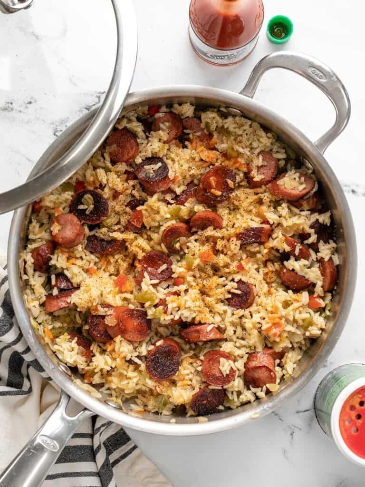

Sausage and Rice

This simple yet delicious dish makes for a great dinner!
Ingredients:
- 8 oz. smoked sausage
- 2 Tbsp cooking oil
- 10 oz. frozen seasoning mix (celery, onion, bell pepper, parsley
- 1 cup long grain white rice
- 1.5 cups chicken broth (made with bouillon)
- 1/2 tsp Creole seasoning
- hot sauce to taste
Steps:
- Slice the smoked sausage into ½-inch thick rounds.
- Add the cooking oil to a deep skillet and heat over medium. Once hot, add the smoked sausage and continue to cook until the sausage has browned (3-5 minutes).
- Add the frozen seasoning mix to the skillet and continue to cook and stir over medium heat until the vegetables are heated through.
- Add the rice, Creole seasoning, and chicken broth to the skillet, then stir until everything is combined.
- Place a lid on the skillet, turn the heat up to medium-high, and let the broth come up to a boil. When it reaches a full boil, turn the heat down to medium-low, and let the skillet simmer for 15 minutes (do not lift the lid, do not stir).
- After simmering for 15 minutes, turn off the heat and let the skillet rest with the lid in place for an additional five minutes.
- Finally, lift the lid, fluff the rice, and add more Creole seasoing and hot sauce to taste. Serve and enjoy!